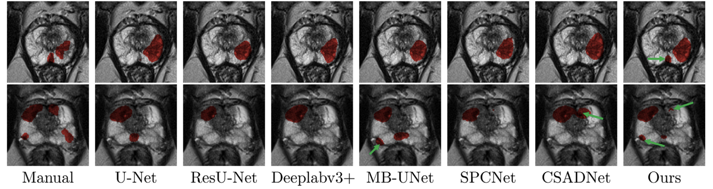
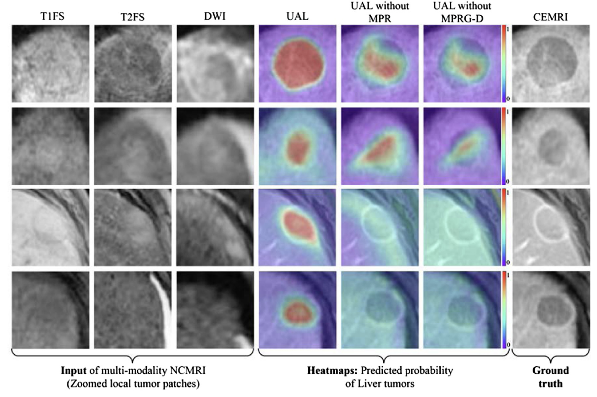

Image Analysis & Segmentation

Overview
This work explores computational methods for identifying anatomy, segmenting lesions, and measuring disease on medical images. Projects span prostate zonal and cancer segmentation, liver tumor detection on non-contrast MRI, and kidney tumor segmentation and measurement.
The methods include segmentation networks, adversarial learning, and interactive approaches that combine automated analysis with human input. These studies evaluate technical performance and potential uses in imaging workflows. Related work on how radiologists interpret images and learn is described in Radiologist Performance & Education.
Selected publications
For my full publication record, visit Google Scholar.
-
Boundary-aware semantic clustering network for segmentation of prostate zones from T2-weighted MRIPhys Med Biol, 2024
Developed a boundary-aware network (BASC-Net) that improves segmentation of the peripheral and central gland zones in prostate MRI by focusing on features near tissue boundaries. BASC-Net outperformed nine state-of-the-art methods across multiple datasets.
Clinical relevance: May support research on prostate lesion localization by providing more consistent zonal boundaries; effects on biopsy planning were not established by this segmentation study.
-
Interactive cascaded network for prostate cancer segmentation from multimodality MRI with automated quality assessmentBioengineering, 2024
Proposed a hybrid segmentation pipeline combining automated deep learning with selective user input via the Segment Anything Model. With users identifying lesion regions on approximately half of the images, segmentation accuracy was statistically indistinguishable from using manual region identification on all images.
Clinical relevance: Suggests a way to focus human input on lower-quality segmentations. Its effect on biopsy or treatment workflows requires further evaluation.
-
Prostate cancer segmentation from MRI by a multistream fusion encoderMed Phys, 2023
Developed a multistream encoder that fuses features from T2-weighted and diffusion-weighted MRI at multiple scales. A patch-based loss function improved performance on small lesions, and the model outperformed several existing methods across 900+ cases.
Clinical relevance: May support workflows that require prostate lesion contours, such as targeted biopsy planning. The study evaluated segmentation performance rather than clinical outcomes.
-
United adversarial learning for liver tumor segmentation and detection of multi-modality non-contrast MRIMed Image Anal, 2021
Proposed a multitask adversarial network that detects and segments hemangiomas and hepatocellular carcinoma using only non-contrast MRI (Figure 1). The model achieved high Dice scores and accuracy without requiring contrast-enhanced imaging.
Clinical relevance: Explores automated lesion analysis on non-contrast MRI. The reported results do not establish a replacement for contrast-enhanced imaging or a validated screening pathway.
-
MB-FSGAN: Joint segmentation and quantification of kidney tumor on CT by the multi-branch feature sharing generative adversarial networkMed Image Anal, 2020
Introduced a generative adversarial network that jointly segments kidney tumors and quantifies morphometric indices. The model achieved 95.7% pixel accuracy and strong agreement with manual tumor measurements across five indices.
Clinical relevance: May reduce manual work in measuring renal tumors. The study assessed segmentation and measurement performance rather than improvements in diagnosis or treatment decisions.

Figure 1: Heatmaps generated by the united adversarial learning model for detecting liver tumors from multi-sequence non-contrast MRI. High activation areas (red) correspond to predicted tumor regions. Source: United adversarial learning for liver tumor segmentation and detection of multi-modality non-contrast MRI, Medical Image Analysis, 2021.
Future directions
I am applying experience from these image analysis projects to data from the abbreviated Primovist study to develop liver lesion detection and classification tools. We are currently working on a paper investigating radiomics in this setting. This work uses the trial dataset to explore computational approaches to lesion characterization alongside the trial’s comparison of MRI protocols.